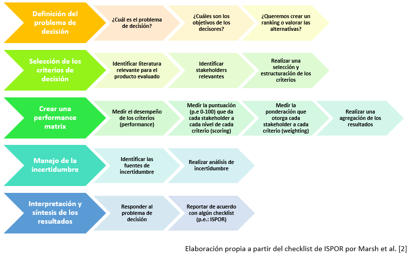
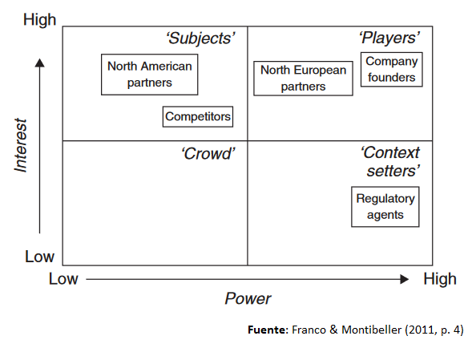

En la actualidad, existe una rama importante de la actividad HTA (health technology assessment) dedicada a la construcción de MCDAs (Análisis de decisiones multi-criterio por sus siglas en inglés) para facilitar la toma de decisiones. Estos MCDAs no ofrecen un único valor determinista para que el decisor tome una decisión, sino que el resultado permite conocer qué criterios se han considerado, qué preferencias se han tenido en cuenta, de quién provienen las preferencias, qué información previa se ha consultado y qué métodos de agregación de las preferencias y resultados se ha empleado para obtener una “puntuación final”. En general, los MCDAs suelen tener como fin la comparación de productos diferentes (en nuestro caso tecnologías sanitarias). A través de ellos creamos un marco que evalúa, de forma transparente y explícita, los diferentes productos existentes y genera un resultado (que bien podría ser un ranking, una puntuación, etc.). En general, la mayoría de resultados generados por los MCDAs son cálculos del valor de las alternativas consideradas [1].
Cuando se lleva a cabo un MCDA, el primer paso es siempre definir su objetivo [2]. Se debe hacer una descripción de la decisión a la que nos vamos a enfrentar, y para ello es recomendable consultar a todas las partes interesadas (decisores, clínicos, pacientes, etc.). Para realizar esta tarea, es conveniente responder a preguntas relacionadas con cuál es la mejor forma de asignar unos recursos escasos.
Una vez definido el objetivo principal para la realización de un MCDA, se nos presenta una de las tareas claves: la definición de los criterios relevantes para la decisión a tomar. Los criterios son todas aquellas características del producto (o circunstanciales al producto) que deben ser valoradas para la toma de la decisión final. Una de las recomendaciones más importantes para la definición de los criterios es que, si bien se trata de un trabajo de naturaleza cualitativa, los resultados deben ser lo más replicables que sea posible. Es decir, el proceso mediante el cual se hallan qué criterios han de ser tenidos en cuenta debe, en las mismas condiciones, hallar los mismos criterios. Aquí consideramos que, principalmente, existen dos fuentes de las que podemos extraer los criterios relevantes:
- La literatura publicada
- Expertos y/o partes interesadas (stakeholders)
En el caso de que estemos evaluando tecnologías sanitarias en base a los criterios que decidamos, la estrategia de selección de los criterios deberá ser bottom-up [3] (desde lo particular hasta lo general). Para ello, a la literatura debemos preguntarle, ¿en qué otros contextos se han evaluado los productos? Y, ¿qué criterios se han tenido en cuenta? Para ello, una revisión de la literatura extensa, usando cadenas de texto personalizadas (términos empleados junto con operadores booleanos en bases de datos como PubMed para localizar con precisión los artículos que buscamos) para la búsqueda en bases de datos como PubMed es lo ideal. Es necesario, al igual que en cualquier revisión de la literatura, conocer toda la terminología empleada en el campo que necesitemos, pues si no, omitiremos resultados importantes. Una estrategia común en este punto es crear una larga lista de todos los potenciales criterios que encontremos en la revisión de la literatura [2]. Esta larga lista podrá ser depurada siguiendo las recomendaciones de la literatura y consultando con las partes interesadas [4]. De entre las recomendaciones de la literatura nos quedaremos con los requisitos publicados en la guía de ISPOR [2]:
- Se deberán considerar todos los criterios importantes / no debe omitirse ningún criterio importante.
- No deberán incluirse criterios poco importantes y/o redundantes.
- No deberán incluirse dos (o más criterios) que consideren el mismo aspecto / no debe haber solapamiento entre los criterios.
- Los criterios deberán ser independientes unos de otros / un criterio debe poder ser evaluado independientemente de cómo se presente el resto de criterios en la alternativa.
Inclusión de criterios relevantes: en el caso de una tecnología sanitaria, estaríamos cometiendo un error respecto al primer criterio si, por ejemplo, no estuviéramos considerando la efectividad como un criterio relevante. Esto ocurre porque la efectividad es uno de los principales motivos, si no el principal, para el que se desarrolla una tecnología sanitaria. Al no considerarlo, estaríamos olvidándonos de una de las dimensiones más importantes y realizando nuestra evaluación sólo considerando el resto de criterios que, pese a también tener importancia, no capturan el rango completo de dimensiones de la decisión. Si se detecta que se ha cometido este error en algún punto, con incluir el(los) criterio(s) omitido(s), se resolvería el problema.
Exclusión de criterios irrelevantes: el segundo error, sin embargo, sería pecar de lo contrario. La inclusión de criterios poco importantes, como por ejemplo el color de la medicación, ocuparía tiempo y recursos y generaría ruido en el cálculo del valor. Este error debe evitarse suprimiendo aquellos criterios que podamos argumentar que sean poco relevantes.
El no solapamiento, a diferencia de los requisitos anteriores, se suele incumplir muy a menudo. Imaginemos que uno de los criterios es coste-efectividad y el otro es precio. Al cambiar el precio del producto, el cambio quedará registrado tanto por el criterio de coste-efectividad como por el de precio. Esto debe ser evitado, por ejemplo, a través de la fusión de criterios solapados. Específicamente, con respecto al coste, existe bastante consenso en no incluir ningún criterio que lo incluya [5]. Esto es así porque al incluirlo, estaríamos generando problemas teóricos en considerar el coste como algo que añade valor a la alternativa. Es por esto que, en la mayoría de casos, se recomienda la exclusión de cualquier tipo de criterio de coste/precio y la utilización de un índice compuesto posterior que una los resultados del MCDA con el coste de la alternativa [6].
El último requisito, la
independencia de criterios
se incumple si cuando, por ejemplo, la posología está dividida dos criterios, dosis (2, 3, 4) y forma de aplicación (inyección subcutánea, oral, etc.). De esta forma, las dosis no serán independientes de la forma de aplicación (p.e.: una píldora oral al día podría ser preferida a una inyección semanal), por lo que necesitaríamos unir ambos criterios.Hasta este punto, los criterios obtenidos en la literatura han sido enmendados a través de la eliminación de unos y la combinación de otros. Para mejorar la selección de estos criterios, podemos acudir a las partes interesadas y realizar dos preguntas fundamentales:
- ¿Falta algún criterio?
- ¿Sobra algún criterio?
La relevancia que otorguemos a cada una de las opiniones de las partes interesadas será, finalmente, decisión del investigador. Por ello se recomienda realizar un mapeo de las grupos de interés a través de un power-interest grid como el siguiente extraído de Franco y Montibeller [3]:
Con toda la información aportada por la búsqueda de literatura y las consultas con las partes interesadas, deberíamos ser capaces de realizar una selección adecuada de criterios. En la literatura podemos encontrar marcos de evaluación ya establecidos como, por ejemplo, EVIDEM [7], aunque estos marcos no suelen tener en cuenta recomendaciones más recientes como, por ejemplo, no incluir criterios de costes/precio. Los MCDA de ponderación de tecnologías sanitarias emplean una media de 8.4 criterios [8], un número un poco superior a el número de criterios (atributos) empleados en los experimentos de elección discreta (DCEs por sus siglas en inglés) [9]. A diferencia de estos, sin embargo, los MCDAs necesitan un número de encuestados (partes interesadas) sustancialmente menor al que se emplea en los DCEs, que por motivos de precisión estadística requieren un número mayor de participantes.
La siguiente parte trata de la construcción de la matriz de desempeño. En esta sección se trata de construir una tabla con los criterios en la primera columna, su desempeño (performance) en la segunda, su puntuación (scoring) en la tercera, su ponderación (weighting) en la cuarta, y un método de agregación al final.
- Desempeño (performance): una vez que se definen los criterios, para cada alternativa evaluada es necesario que midamos el desempeño en ese criterio. Por ejemplo, la efectividad puede ser del 80%, 90%, 95%, etc. Necesitamos encontrar para cada alternativa cuál es su efectividad, y la mejor forma de hacer esto es a través de una revisión literaria y usando la mejor evidencia disponible.
- Puntuación (scoring): se trata de capturar las preferencias de las partes interesadas intra-criterio. Por ejemplo, esta intensidad podría ser medida del 0 al 100. 50 significaría la mitad de la puntuación, mientras que algo con puntuación de 100 debería tener el doble de desempeño que algo que puntúe 50 para el mismo declarador de preferencias.
- Ponderación (weighting): se trata de cuantificar la relevancia del criterio con respecto al resto. Con scoring hemos puntuado cada posible valor de performance (desempeño) en un rango de 0 a 100. Sin embargo, no podemos puntuar todos los criterios por igual pues no todos los criterios son igual de importantes. Esto quiere decir que, por ejemplo, puede ser que la efectividad 100% y la posología más conveniente obtengan puntuaciones de 100. Sin embargo, esto no significa que sean igual de importantes, pues puede que prefiramos una posología menos conveniente para obtener mayor efectividad, pero no al contrario. Es por esto que incluimos otra puntuación que nos sirve para ver cómo de importantes son unos criterios frente a otros (p.e.: efectividad podría ser dos veces más importante que posología). Esta nueva puntuación podría ser un reparto de 100 puntos entre todos los criterios.
Finalmente, debe realizarse una agregación de la puntuación y la ponderación para obtener un resultado final. Para realizar esto, se han aplicado diferentes métodos en la literatura. En general, se dividen en dos ramas: composicionales y decomposicionales.
Los métodos composicionales son los que siguen el proceso descrito arriba por separado: desempeño, puntuación, ponderación y agregación. Se les llama composicionales porque componen una puntuación agregada para cada criterio. Existe una heterogénea cantidad de métodos empleados para estos, algunos con mejor reputación que otros en la comunidad de expertos en la materia. La ventaja es que si estos métodos son empleados, la muestra necesaria es menor que la que se emplea en los métodos decomposicionales. Sin embargo, existen menos guías de buenas prácticas y recursos para implementarlos de forma adecuada.
Los métodos decomposicionales (experimentos de elección discreta y/o Conjoint analysis), sin embargo, realizan el cálculo de la puntuación, la ponderación y la agregación final de forma agregada y consistente con la teoría de la utilidad aleatoria. Esto significa que se va a estimar una función de utilidad subyacente que, como ha descompuesto la utilidad que reporta cada nivel de desempeño de cada criterio, podrá calcular la utilidad que reporta cada alternativa de forma consistente. Sin embargo, es comprensible que en muchas ocasiones estos métodos no sean empleados pues su construcción puede ser compleja y la muestra necesaria mucho mayor.
La elección de usar un método composicional o decomposicional determinará la forma en la que se estiman la puntuación y la ponderación. Los métodos composicionales deberán recurrir a la puntuación y ponderación por separado, como se ha explicado antes. Sin embargo, cuando se emplean métodos decomposicionales, los criterios son mezclados con sus posibles desempeños en forma de atributos y niveles. Con estos atributos y niveles se generan diferentes tratamientos alternativos que son comparados en sets de preguntas entre los que las partes interesadas escogerán. La configuración de estos sets de preguntas y sus alternativas atenderá a principios de eficiencia estadística, como por ejemplo los establecidos por Huber y Zwerina [10]. Pero una vez obtenidos los coeficientes de cada nivel (de desempeño), no hace falta más agregación que la suma de los coeficientes estimados que compongan a las alternativas realmente evaluadas. Esto es así porque la teoría de la utilidad aleatoria es consistente con los resultados de la regresión logística [11], por lo que los resultados de elección analizados con modelos logit pueden estimar coeficientes equivalentes a la utilidad observable (la utilidad que reporta un cierto nivel de desempeño).
Así mismo, entre los entrevistados (partes interesadas) para conseguir las medidas es común que exista heterogeneidad (p.e.: sanitarios, decisores, pacientes, etc.). Es el investigador el que debe decidir qué importancia le da a cada grupo, por ejemplo, ponderando la importancia de sus respuestas (aunque también podría otorgar una importancia cambiante según cuál sea el criterio).
Una vez se haya realizado la agregación de las preferencias ya sea a través de un método decomposicional o composicional, tendremos una puntuación final agregada para cada alternativa evaluada. Esta puntuación final estará siempre sujeta a incertidumbre, que según el segundo reporte de ISPOR [8] suele provenir de cuatro fuentes:
- Imprecisión en las mediciones, tanto de desempeño, como de puntuación y ponderación.
- Variaciones en los inputs del modelo (p.e.: diferente efectividad según la población objetivo).
- Calidad de la evidencia.
- Incertidumbre estructural, por la propia construcción del MCDA.
Teniendo en cuenta estas fuentes de incertidumbre, deberemos aplicar algún método para compensar en el caso de que estemos computando beneficios que no existan, por ejemplo. En el caso del marco EVIDEM mencionado anteriormente, se realizan penalizaciones con puntuaciones negativas. En otros casos se pueden realizar análisis de la incertidumbre probabilísticos o deterministas, siendo el primero el más adecuado. En Zozaya et al. [12] incluso las ponderaciones y puntuaciones son reevaluadas para comprobar el grado de replicabilidad, y los resultados son comparados con los anteriores.
Finalmente, los resultados deben ser reportados de acuerdo con el problema de decisión considerado en primera instancia, haciendo uso de alguno de los múltiples checklist existentes en la literatura para no dejar de reportar alguna información importante.
Referencias
- [1] P. Thokala and A. Duenas, “Multiple criteria decision analysis for health technology assessment,” Value Heal., vol. 15, no. 8, pp. 1172–1181, Dec. 2012, doi: 10.1016/j.jval.2012.06.015.
- [2] K. Marsh et al., “Multiple Criteria Decision Analysis for Health Care Decision Making - Emerging Good Practices: Report 2 of the ISPOR MCDA Emerging Good Practices Task Force,” Value Heal., vol. 19, no. 2, pp. 125–137, 2016, doi: 10.1016/j.jval.2015.12.016.
- [3] L. A. Franco and G. Montibeller, “Problem Structuring for Multicriteria Decision Analysis Interventions,” in Wiley Encyclopedia of Operations Research and Management Science, Hoboken, NJ, USA: John Wiley & Sons, Inc., 2011.
- [4] G. Montibeller and D. von Winterfeldt, “Cognitive and Motivational Biases in Decision and Risk Analysis,” Risk Anal., vol. 35, no. 7, pp. 1230–1251, Jul. 2015, doi: 10.1111/risa.12360.
- [5] F. Dionne and C. Mitton, “Is Multicriteria Decision Analysis a Resource Allocation Framework?,” Value in Health, vol. 23, no. 10. Elsevier Ltd, pp. 1400–1401, Oct. 01, 2020, doi: 10.1016/j.jval.2020.02.016.
- [6] N. Zozaya González Juan Oliva Moreno Álvaro Hidalgo Vega and N. Zozaya González Health Economics Area Manager Weber Juan Oliva Moreno Associate Professor in, Multi-Criteria Decision Analysis in Healthcare Its usefulness and limitations for decision making Editors.
- [7] M. M. Goetghebeur, M. Wagner, H. Khoury, R. J. Levitt, L. J. Erickson, and D. Rindress, “Evidence and Value: Impact on DEcisionMaking - The EVIDEM framework and potential applications,” BMC Health Serv. Res., vol. 8, p. 270, 2008, doi: 10.1186/1472-6963-8-270.
- [8] K. Marsh, T. Lanitis, D. Neasham, P. Orfanos, and J. Caro, “Assessing the value of healthcare interventions using multi-criteria decision analysis: A review of the literature,” PharmacoEconomics, vol. 32, no. 4. Adis International Ltd, pp. 345–365, Feb. 07, 2014, doi: 10.1007/s40273-014-0135-0.
- [9] F. R. Johnson et al., “Constructing experimental designs for discrete-choice experiments: Report of the ISPOR conjoint analysis experimental design good research practices task force,” Value Heal., vol. 16, no. 1, pp. 3–13, Jan. 2013, doi: 10.1016/j.jval.2012.08.2223.
- [10] J. Huber and K. Zwerina, “The Importance of Utility Balance in Efficient Choice Designs,” J. Mark. Res., vol. 33, no. 3, pp. 307–317, Aug. 1996, doi: 10.1177/002224379603300305.
- [11] D. McFadden, “Conditional logit analysis of qualitative choice behavior,” in Frontiers in Econometrics., New York, NY: Academic Press, 1974, pp. 105–42.
- [12] N. Zozaya et al., “Determining the Value of Two Biologic Drugs for Chronic Inflammatory Skin Diseases: Results of a Multi-Criteria Decision Analysis,” BioDrugs, vol. 32, no. 3, pp. 281–291, Jun. 2018, doi: 10.1007/s40259-018-0284-3.